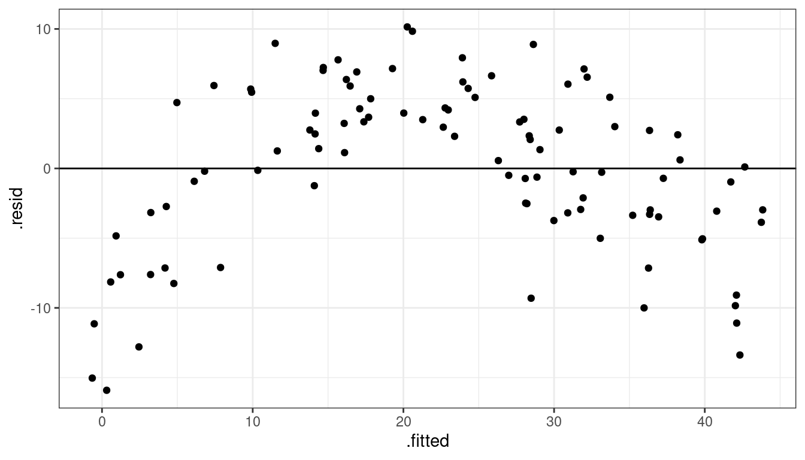
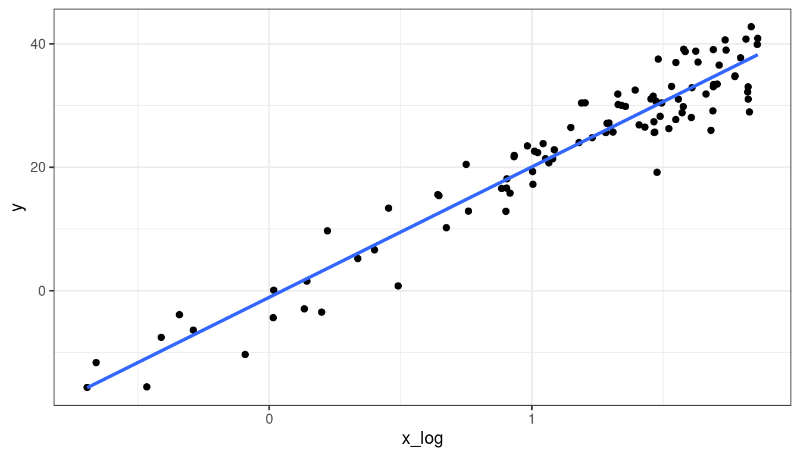
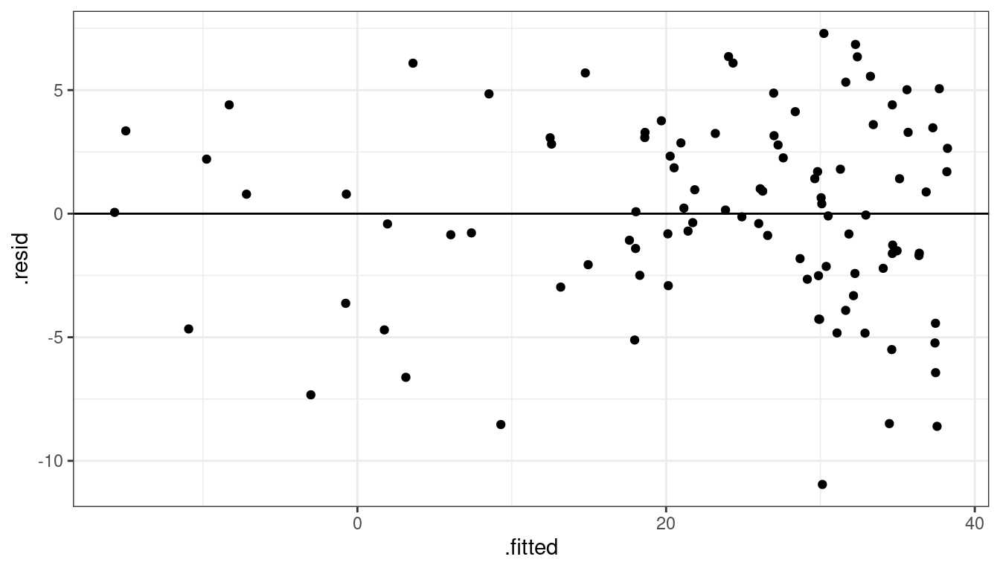
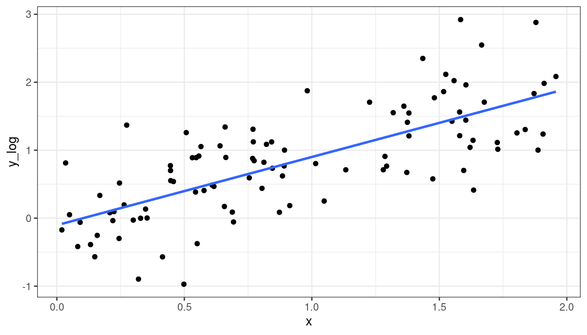
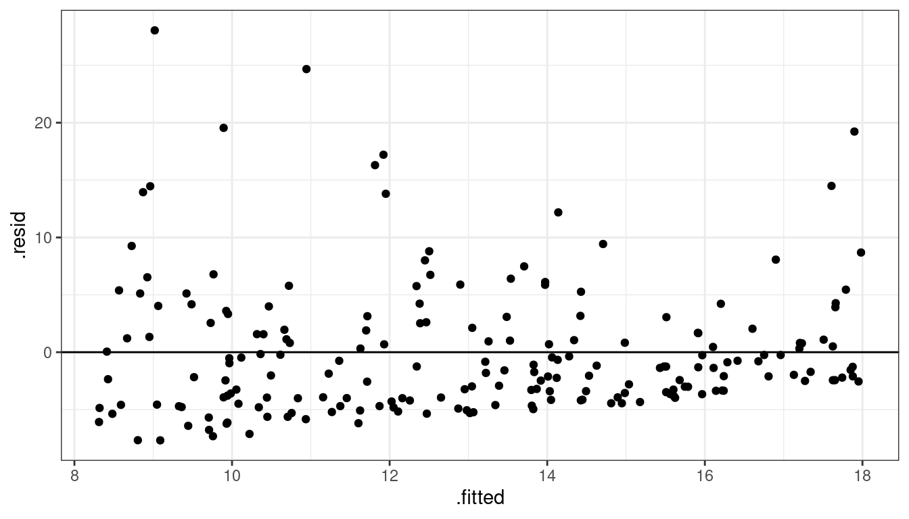

Diagnostics and Remedial Measures
David Gerard
2021-08-03
- Learning Objectives
- Recall: Assumptions in Decreasing Order of Importance
- Problems when Violated
- Dataset 1: Gold Standard
- Dataset 2: Curved Monotone Relationship, Equal Variances
- Dataset 3: Curved Non-monotone Relationship, Equal Variances
- Dataset 4: Curved Monotone Relationship, Variance Increases with \(Y\)
- Dataset 5: Linear Relationship, Equal Variances, Skewed Distribution
- Dataset 6: Linear Relationship, Unequal Variances
- Dataset 7: Outlying observations
- Sequence plots of residuals to check independence
- Quantile-Quantile plots of residuals to check normality
- Residual plots against omitted predictors
- \(F\)-test for lack of fit
- LOWESS curves
Learning Objectives
- Chapter 3 of KNNL (skip Sections 3.4–3.6 and the Box-Cox transformation).
- Interpreting residuals plots.
- Diagnosing violations in the assumptions of the simple linear model.
- Suggesting solutions to remedy the violations.
Recall: Assumptions in Decreasing Order of Importance
Linearity - Does the relationship look like a straight line?
Independence - knowledge of the value of one observation does not give you any information on the value of another.
Equal Variance - The spread is the same for every value of \(x\)
Normality - The distribution isn’t too skewed and there aren’t any too extreme points. (only an issue if you have outliers and a small number of observations because of the CLT, or if you are doing prediction intervals).
Problems when Violated
Linearity - Linear regression line does not pick up actual relationship
Independence - Linear regression line is unbiased, but standard errors are off.
Equal Variance - Linear regression line is unbiased, but standard errors are off.
Normality - Unstable results if outliers are present and sample size is small.
Assessment Tools: Scatterplots and Residual Plots
Make a scatterplot of the explanatory variable (\(x\)-axis) vs the response (\(y\)-axis) to check for non-linearity, equal variance, and normality violations.
Residuals (\(y\)-axis) vs fitted values (\(x\)-axis) is sometimes more clear because the signal is removed.
You should get used to residual plots, because they are necessary when we start doing multiple linear regression
- \(x\) versus \(y\) does not work well as a diagnostic device when you have many \(x\)’s.
Dataset 1: Gold Standard
Dataset 1: Scatterplot
library(tidyverse)
library(broom)
x <- runif(100, -3, 3)
y <- x + rnorm(100)
df <- data.frame(x = x, y = y)qplot(x = x, y = y, data = df) + geom_smooth(method = "lm", se = FALSE)
Dataset 1: Residual Plot
lmout <- lm(y ~ x, data = df)
aout <- augment(lmout)
qplot(x = .fitted, y = .resid, data = aout) + geom_hline(yintercept = 0)Dataset 1: Summary
Means are straight lines
Residuals seem to be centered at 0 for all \(x\)
Variance looks equal for all \(x\)
Everything looks perfect
Dataset 2: Curved Monotone Relationship, Equal Variances
Dataset 2: Scatterplot
x <- runif(100, 0, 6)
x <- x - min(x) + 0.5
y <- log(x) * 20 + rnorm(100, sd = 4)
df <- data.frame(x = x, y = y)qplot(x = x, y = y, data = df) + geom_smooth(method = "lm", se = FALSE)
Dataset 2: Residual Plot
lmout <- lm(y ~ x)
aout <- augment(lmout)
qplot(x = .fitted, y = .resid, data = aout) + geom_hline(yintercept = 0)
Dataset 2: Summary
Curved (but always increasing or always decreasing) relationship between \(x\) and \(y\).
Variance looks equal for all \(x\)
Residual plot has a parabolic shape.
These indicate a \(\log\) transformation of \(x\) could help.
Why not \(\log(y)\)? Because taking transforming \(y\) can change the variance, and we already have constant variance, so we do not want to mess with that.
- Recall, random variation occurs in the \(y\) direction, not the \(x\) direction.
Dataset 2: Transformed \(x\) Scatterplot
df <- mutate(df, x_log = log(x))
qplot(x = x_log, y = y, data = df) + geom_smooth(method = "lm", se = FALSE)Dataset 2: Transformed \(x\) Residual Plot
lmout <- lm(y ~ x_log, data = df)
aout <- augment(lmout)
qplot(x = .fitted, y = .resid, data = aout) + geom_hline(yintercept = 0)
Dataset 3: Curved Non-monotone Relationship, Equal Variances
Dataset 3: Scatterplot
x <- runif(100, -3, 3)
y <- -x^2 + rnorm(100)
df <- data.frame(x = x, y = y)qplot(x = x, y = y, data = df) + geom_smooth(method = "lm", se = FALSE)
Dataset 3: Residual Plot
lmout <- lm(y ~ x, data = df)
aout <- augment(lmout)
qplot(x = .fitted, y = .resid, data = aout) + geom_hline(yintercept = 0)
Dataset 3: Summary
Curved relationship between \(x\) and \(y\)
Sometimes the relationship is increasing, sometimes it is decreasing.
Variance looks equal for all \(x\)
Residual plot has a parabolic form.
Dataset 3: Solution
Fit model:
\[ E[Y_i] = \beta_0 + \beta_1 X_i + \beta_2 X_i^2 \]
A more complicated solution (which we will not cover) would be to fit model \[ Y_i = \begin{cases} \beta_0 + \beta_1 X_i & \text{ if } X_i < C\\ \beta_0^* + \beta_1^* X_i & \text{ if } X_i > C\\ \end{cases} \]
Dataset 3: Fitting \(E[Y_i] = \beta_0 + \beta_1 X_i + \beta_2 X_i^2\)
df <- mutate(df, x2 = x^2) ## create x^2 first
quad_lm <- lm(y ~ x2 + x, data = df) ## lm of x^2 + x
aout <- augment(quad_lm)
qplot(x = x, y = y, data = aout) +
geom_line(mapping = aes(x = x, y = .fitted), col = "blue", lwd = 1)
Dataset 3: Solution 1 Residuals
qplot(x = .fitted, y = .resid, data = aout) + geom_hline(yintercept = 0)
Dataset 3: Peak estimation
Recall that \(y = \beta_0 + \beta_1x + \beta_2x^2\) is the equation of a parabola.
The estimated parabola is \[ y = 0.108 - 0.0524x - 1.03x^2 \]
We can get these coefficient estimates by running
tidy(quad_lm)## # A tibble: 3 × 5 ## term estimate std.error statistic p.value ## <chr> <dbl> <dbl> <dbl> <dbl> ## 1 (Intercept) -0.211 0.152 -1.39 1.68e- 1 ## 2 x2 -0.952 0.0402 -23.7 4.46e-42 ## 3 x 0.106 0.0626 1.70 9.25e- 2The negative coefficient for \(x^2\) indicates that the parabola has a maximum, which we can recall occurs at \[ x = -\frac{\beta_1}{2\beta_2} = -\frac{-0.05237}{2 \times -1.02588} = -0.02552 \] So we could say that the trend increases to about 0, then decreases after 0.
Dataset 4: Curved Monotone Relationship, Variance Increases with \(Y\)
Dataset 4: Scatterplot
x <- runif(100, 0, 2)
y <- exp(x + rnorm(100, sd = 1/2))
df <- data.frame(x = x, y = y)qplot(x = x, y = y, data = df) + geom_smooth(method = "lm", se = FALSE)
Dataset 4: Residual Plot
lmout <- lm(y ~ x, data = df)
aout <- augment(lmout)
qplot(x = .fitted, y = .resid, data = aout) + geom_hline(yintercept = 0)
Dataset 4: Summary
Curved relationship between \(x\) and \(y\)
Variance looks like it increases as \(y\) increases
Residual plot has a parabolic form.
Residual plot variance looks larger to the right and smaller to the left.
Dataset 4: Solution
Take a log-transformation of \(y\).
df <- mutate(df, y_log = log(y)) qplot(x = x, y = y_log, data = df) + geom_smooth(method = "lm", se = FALSE)
Dataset 4: Solution
lmout <- lm(y_log ~ x, data = df)
aout <- augment(lmout)
qplot(x = .fitted, y = .resid, data = aout) + geom_hline(yintercept = 0)
Dataset 5: Linear Relationship, Equal Variances, Skewed Distribution
Dataset 5: Scatterplot
x <- runif(200)
y <- 15 * x + rexp(200, 0.2)
df <- data.frame(x = x, y = y)qplot(x, y, data = df) + geom_smooth(method = "lm", se = FALSE)Dataset 5: Residual Plot
lmout <- lm(y ~ x, data = df)
aout <- augment(lmout)
qplot(x = .fitted, y = .resid, data = aout) + geom_hline(yintercept = 0)Dataset 5: Summary
Straight line relationship between \(x\) and \(y\).
Variances about equal for all \(x\)
Skew for all \(x\)
Residual plots show skew.
Dataset 5: Solution
Do nothing, but report skew (usually ok to do)
Be fancy, fit quantile regression:
\[ Median(Y_i) = \beta_0 + \beta_1 X_i \]
- Be fancy, run a bootstrap (maybe we’ll talk about this later).
Dataset 6: Linear Relationship, Unequal Variances
Dataset 6: Scatterplot
x <- runif(100)
y <- x + rnorm(100, sd = (x + 0.3)^2 / 2)
df <- data.frame(x = x, y = y)qplot(x = x, y = y, data = df) + geom_smooth(method = "lm", se = FALSE)
Dataset 6: Residual Plot
lmout <- lm(y ~ x, data = df)
aout <- augment(lmout)
qplot(x = .fitted, y = .resid, data = lmout) + geom_hline(yintercept = 0)
Dataset 6: Summary
Linear relationshp between \(x\) and \(y\).
Variance is different for different values of \(x\).
Residual plots really good at showing this.
Dataset 6: Solution
You can try logging both \(x\) and \(y\), sometimes that works. But that won’t work here. Be careful about negative values.
df <- mutate(df, y_log = log(y + 0.5), x_log = log(x)) qplot(x = x_log, y = y_log, data = df)The modern solution is to use sandwich estimates of the standard errors.
library(lmtest) library(sandwich) cout <- coeftest(x = lmout, vcov. = vcovHC(x = lmout)) tidy(cout)## # A tibble: 2 × 5 ## term estimate std.error statistic p.value ## <chr> <dbl> <dbl> <dbl> <dbl> ## 1 (Intercept) -0.0218 0.0592 -0.368 0.713 ## 2 x 1.00 0.170 5.90 0.0000000530
Compare new with old
tidy(cout, conf.int = TRUE)## # A tibble: 2 × 7
## term estimate std.error statistic p.value conf.low conf.high
## <chr> <dbl> <dbl> <dbl> <dbl> <dbl> <dbl>
## 1 (Intercept) -0.0218 0.0592 -0.368 0.713 -0.139 0.0956
## 2 x 1.00 0.170 5.90 0.0000000530 0.666 1.34tidy(lmout, conf.int = TRUE)## # A tibble: 2 × 7
## term estimate std.error statistic p.value conf.low conf.high
## <chr> <dbl> <dbl> <dbl> <dbl> <dbl> <dbl>
## 1 (Intercept) -0.0218 0.0785 -0.277 7.82e- 1 -0.178 0.134
## 2 x 1.00 0.141 7.11 1.94e-10 0.724 1.28Intuition of Sandwich Estimator of Variance
Simplified Model: \(Y_i = \beta_1 x_i\) (so zero intercept)
Using Calculus: \(\hat{\beta}_1 = \frac{\sum_{i = 1}^n x_i y_i}{\sum_{i = 1}^n x_i^2}\)
So \[\begin{align*} Var(\hat{\beta}_1) &= Var\left(\frac{\sum_{i = 1}^n x_i y_i}{\sum_{i = 1}^n x_i^2}\right)\\ &=\frac{\sum_{i = 1}^n x_i^2 Var(y_i|x_i)}{\left(\sum_{i = 1}^n x_i^2\right)^2} \end{align*}\]
Usual Method: Estimate \(Var(y_i|x_i)\) with \(s_p^2\)
- Assumes variance estimate is same for all \(i\)
Sandwich Method: Estimate \(Var(y_i|x_i)\) with \((y_i - \hat{\beta}_1x_i)^2\)
- Allows variance estimate to differ at each \(i\)
Notes on Sandwich
They result in accurate standard errors of the coefficient estimates as long as
The linearity assumption is satisfied.
Independence is satisfied
You have a large enough sample size.
You cannot use them for prediction intervals
We will talk more about the sandwich estimator later.
Dataset 7: Outlying observations
x <- runif(100, -3, 3)
y <- x + rnorm(100)
x[[100]] <- 2.6
y[[100]] <- 10
df <- data.frame(x = x, y = y)qplot(x = x, y = y, data = df) + geom_smooth(method = "lm", se = FALSE)
Dataset 7: Residual Plot
lmout <- lm(y ~ x, data = df)
aout <- augment(lmout)
qplot(x = .fitted, y = .resid, data = aout) + geom_hline(yintercept = 0)
- So we see one observation very high in residual plot compared to the other points around that area.
Dataset 7: Solution
- It’s generally a bad idea to discard outlying observations unless you know that this is a processing error or a calculation mistake.